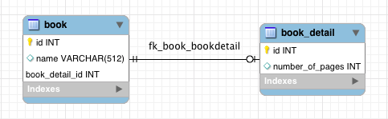

This post walks you through the process of mapping an one-to-one foreign key relationship with Spring Data JPA, Spring Boot, Maven and MySQL.
Hello JPA Series with Spring Boot and MySQL: - JPA One-To-One Foreign Key Relationship Mapping Example with Spring Boot, Maven and MySQL - JPA One-To-One Shared Primary Key Relationship Mapping Example with Spring Boot, Maven and MySQL - JPA One-To-Many Relationship Mapping Example with Spring Boot, Maven and MySQL - JPA Many-To-Many Relationship Mapping Example with Spring Boot, Maven and MySQL - JPA Many-To-Many Extra Columns Relationship Mapping Example with Spring Boot, Maven and MySQL
What you'll need
- JDK 1.8 or later
- Maven 3 or later
- MySQL Server 5.6 or later
Stack
- Spring Data JPA
- Spring Boot
- MySQL
Project structure
├── src
│ └── main
│ ├── java
│ │ └── com
│ │ └── hellokoding
│ │ └── jpa
│ │ ├── model
│ │ │ ├── Book.java
│ │ │ └── BookDetail.java
│ │ ├── repository
│ │ │ └── BookRepository.java
│ │ └── HelloJpaApplication.java
│ └──resources
│ ├── application.properties
| └── db.sql
└── pom.xml
Project dependencies
One-To-One Relationship
The book and book_detail tables have a one-to-one relationship via book.book_detail_id and book_detail.id.

Define JPA Entities
JPA Entity is defined with @Entity annotation, represent a table in your database.
@Table maps the entity with the table. If no @Table is defined, the default value is used: the class name of the entity.
@Id declares the identifier property of the entity.
@Column maps the entity's field with the table's column. If @Column is omitted, the default value is used: the field name of the entity.
@OneToOne defines a one-to-one relationship with another entity. @JoinColumn indicates the entity is the owner of the relationship: the corresponding table has a column with a foreign key to the referenced table. mappedBy indicates the entity is the inverse of the relationship.
Spring Data JPA Repository
Spring Data JPA contains some built-in Repository implemented some common functions to work with database: findOne, findAll, save,...All we need for this example is extend it.
Application Properties
Run the application
You can run the application using mvn spring-boot:run, JPA will insert data into book and book_detail tables.
Source code
git@github.com:hellokoding/jpa-onetoone-foreignkey-springboot-maven-mysql.git
https://github.com/hellokoding/jpa-onetoone-foreignkey-springboot-maven-mysql